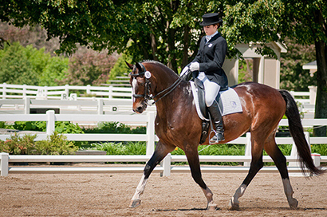
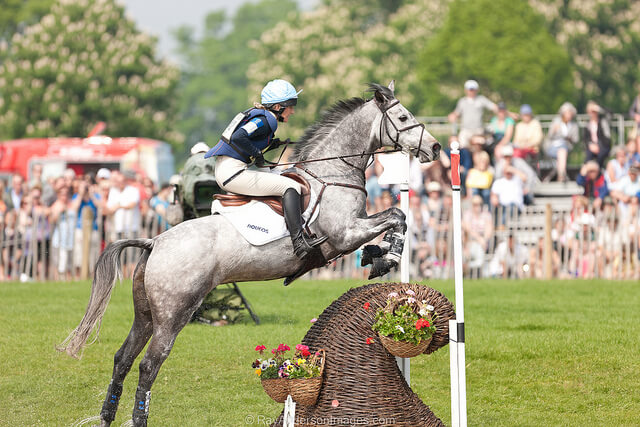
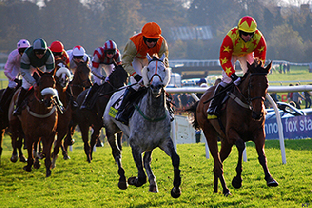
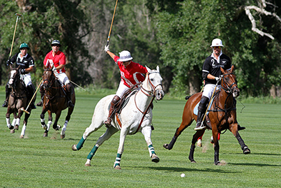

Riding Disciplines
Horseback riding is generally split between Western riding and English riding, with the saddle itself being the biggest difference between the two. But how many other styles and of riding are there? Here we list some of the different disciplines of riding in use today.
Dressage
The purpose of dressage is to develop a horse’s natural athletic ability and willingness to work, which is supposed to make them calm, supple, and attentive to the rider. An extreme form of dressage is the famous Lippizaner stallions from Vienna, Austria.
Eventing
Eventing is a competition that includes dressage, cross-country riding, and stadium jumping, usually over the course of 3 days.
Show jumping

Show jumping is divided into 3 different classes: hunter, jumper, and hunt seat equitation. Hunters are judged by how closely they meet an ideal standard of manners and style. Jumpers are scored objectively in a timed trial with faults for failing to clear an obstacle. Hunt seat jumping judges the rider’s ability on flat ground as well as over fences.
Western pleasure

In Western Pleasure competition, horses are evaluated on the quality of their movement while traveling the perimeter of the arena with other contestants. They follow the judge’s directions to walk, jog, lope, and reverse directions.
Racing
Racing is one of the richest sports in the world and is often referred to as “the sport of kings.” Jockeys have to be very fit both physically and mentally to stay atop an animal moving at 44 miles per hour. This list was neither exhaustive nor detailed, but it gives you an idea of the wide variety of ways in which people get pleasure from riding horses.
Polo
Sport with two opposing teams of four riders who play on a level field; they try to score points through the opponents’ goal by hitting a ball along the ground with a mallet.